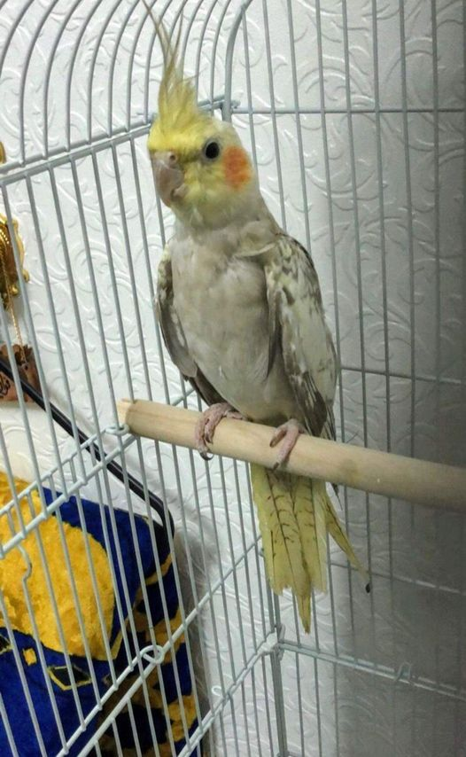

I am a bird-watching enthusiast. I love the outdoors and enjoy going for hikes during weekends. It’s great to connect with nature, enjoy some gorgeous views and get away from the city! Bird watching is a calming activity. One has to focus on the bird calls to discover what bird it is and ascertain their location. I find it easier to de-clutter my mind by focusing on these unique sounds. I also keep a scrapbook to write about my sightings along with a few pictures I click with my DSLR. That also makes nature photography my other hobby! But I always try to draw a picture of the bird and note down its characteristics. So sketching is also my hobby! Also, I often spend time reading nature books and also keep digging information on the internet about birds in this region. My scrapbooks and bird feather collection are my prized possessions.
About
I absolutely love cooking. I can merrily state that my kitchen is my playground in every sense! My mother has always been a wonderful cook, and I feel she is my inspiration. I have seen her prepare scrumptious meals for hundreds of guests in a few hours! Honestly, I find cooking very therapeutic and look forward to planning my meals every day. Besides, my family and friends have always been very patient and supportive, and happily turn into guinea pigs for my experimental recipes! It’s only due to their encouragement and constructive criticism that I’ve gotten better at my hobby. Other than cooking, I like watching lifestyle channels and food shows. I also maintain a journal in which I keep jotting down my recipes from time to time and I might publish it someday!.
Meet Wall'E
Here is Wall'E a cockatiel and it is a popular choice for a pet bird. It is a small parrot with a variety of color patterns and a head crest. They are attractive as well as friendly. Due to their smaller size, cockatiel care and taming are easier than other parrot species. They are capable of mimicking speech, although they can be difficult to understand. These birds are good at whistling and you can teach them to sing along to tunes.
